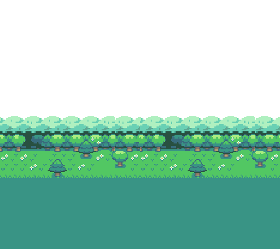
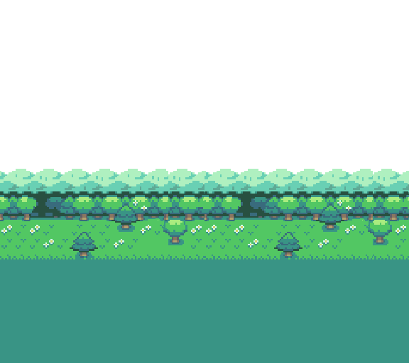

add sprites in flap and death state- add collision boxes that are smaller then the sprites
- paralax background
- sounds + music
- score when passing pipes
- Tap to start icon?
- fix jitter
- text and certain things are blurry
- add resize capabilities
- add tap + click + F
- add background
- localstorage highscore?
- add github and Twitter icons
- add readme
- upload to vercel
- add to codepen?
- ask feedback on the discord web dev